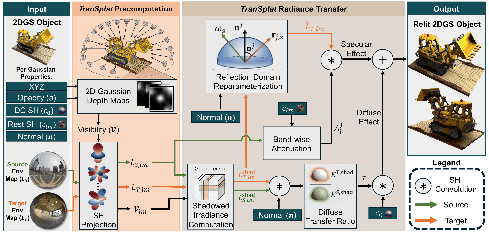
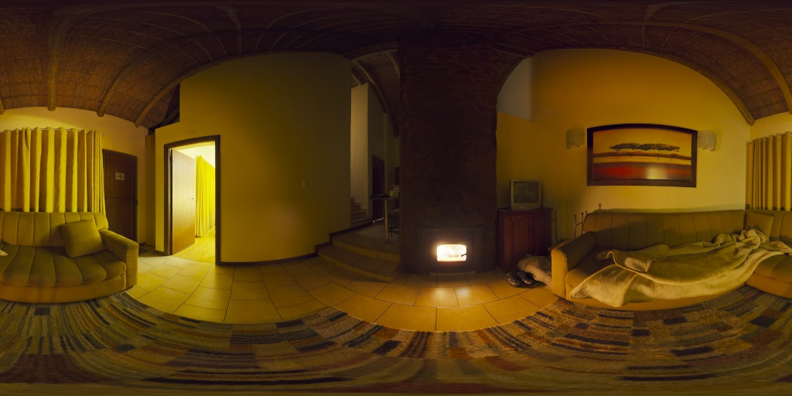
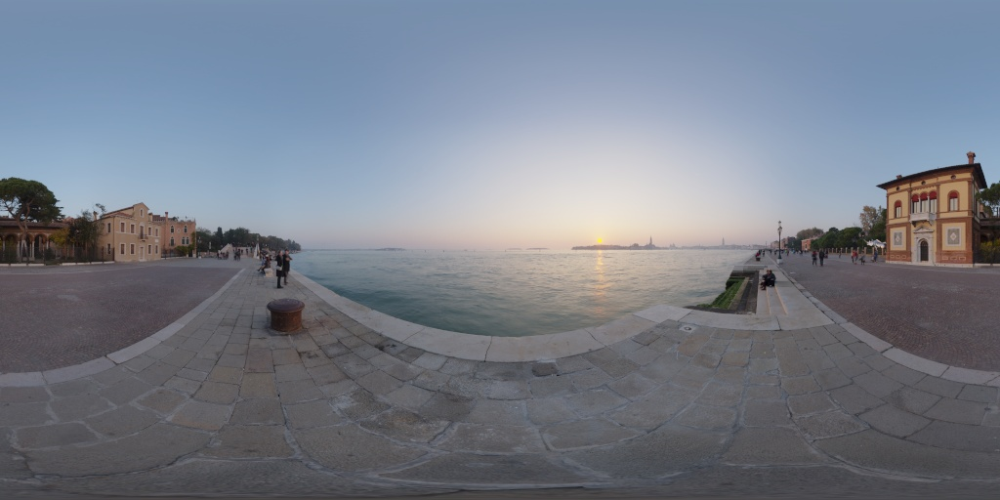
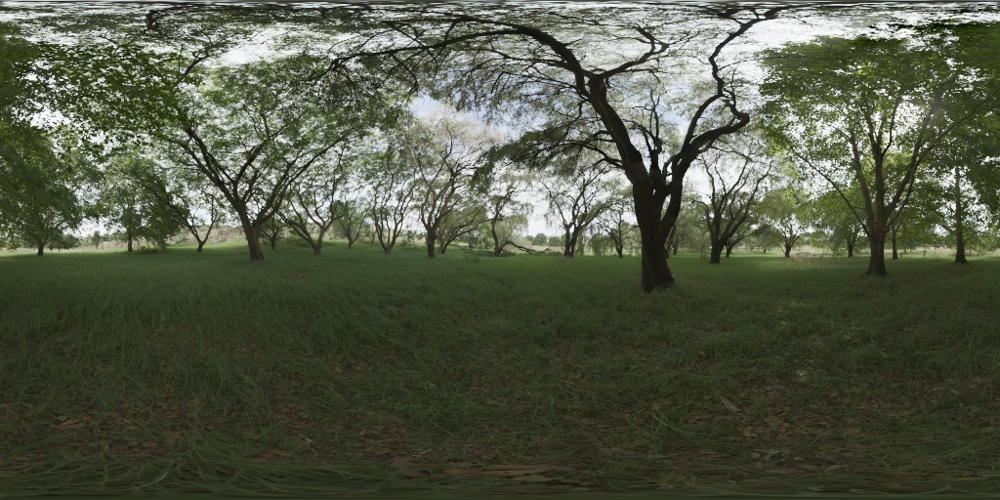
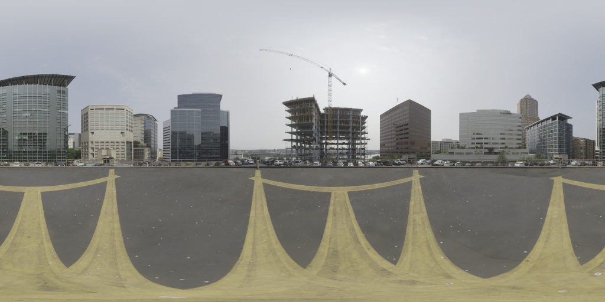
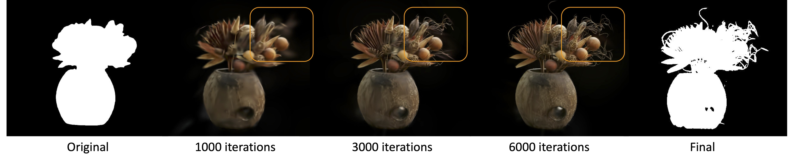
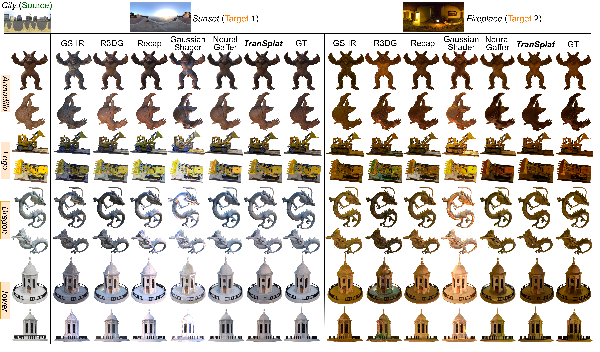

We present TranSplat, a method for instant, accurate object relighting within the Gaussian Splatting (GS) framework. Rather than relying on costly inverse rendering routines, we propose a BRDF-free radiance transfer strategy that analytically modulates the spherical harmonic (SH) appearance coefficients of an object's 2D Gaussian surfels using per-normal irradiance ratios derived from source and target environment maps. To handle view-dependent and glossy appearances without explicit material estimation, we introduce a specularity-aware dual-path SH transfer strategy that adapts higher-order SH bands in the reflection domain. Additionally, we propose a lightweight SH-domain self-shadowing module to ensure physically realistic occlusion without explicit mesh raycasting. Operating as a post-processing step, TranSplat requires no additional GS retraining for a pair of source and target scenes. Evaluations on synthetic and real-world objects demonstrate state-of-the-art accuracy, outperforming recent inverse-rendering and diffusion-based GS relighting methods across most conditions, all while completing relighting operations in under one second. Although bounded by radially symmetric BRDF approximations and the low-pass nature of the SH basis, TranSplat produces perceptually realistic renderings even for glossy, complex materials, establishing a valuable, lightweight path forward for GS relighting.
The Gaussian Splatting (GS) framework represents a scene as optimizable Gaussian primitives, offering fast, differentiable rendering and semantic decomposition. Building on GS, recent methods enable interactive scene editing—recoloring objects or inserting new ones—by manipulating these primitives.
We tackle the fundamental task of transferring a 3D object from one scene to another with realistic relighting. This involves (1) extracting and aligning the object in 3D, and (2) removing source lighting effects and applying target-scene illumination without estimating explicit material properties. To meet these challenges, we introduce TranSplat.

Novel views of the relighting results on TensoIR dataset across different environment maps. Click to select the target environment map.

Fireplace

Sunset

Forest

Source Env Map: City
Target Env Map


@misc{yu2025transplatinstantcrosssceneobject,
title={TranSplat: Instant Cross-Scene Object Relighting in Gaussian Splatting via Spherical Harmonic Transfer},
author={Boyang Yu and Yanlin Jin and Yun He and Akshat Dave and Ravi Ramamoorthi and Guha Balakrishnan},
year={2025},
eprint={2503.22676},
archivePrefix={arXiv},
primaryClass={cs.CV},
url={https://arxiv.org/abs/2503.22676},
}